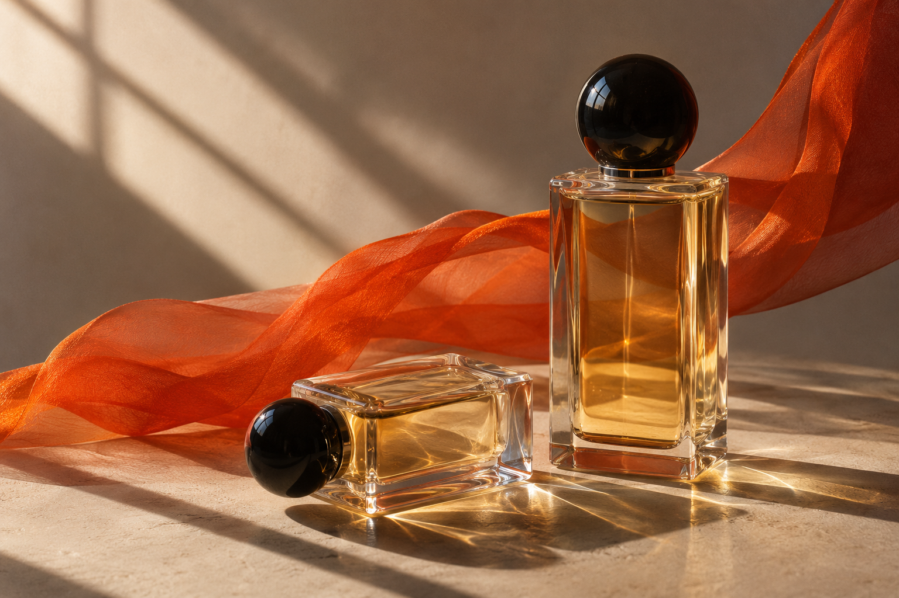

Оригинальная парфюмерия
Точное название, концентрация и объём. В карточках — ноты и ссылки на информацию парфюмерных домов.
БЛИЖЕ К ТОМУ, ЧТО ЛЮБИШЬ
Оригинальная парфюмерия, знакомые имена
и открытия, которые хочется оставить себе.
Началось с двух магазинов.
Продолжается твоей историей.

Каталог и цены — пример. Можно всё попробовать, реальные заказы пока не принимаются.
УЖЕ ЗНАЕШЬ, ЧТО ИЩЕШЬ?
Введи название как помнишь. Даже «байредо» или «баккара».
ПАРФЮМЕРНЫЙ ГАРДЕРОБ
Сравни ноты, объём и цену.
Оставь то, что откликается.
Убери часть фильтров или попробуй название бренда.
Можно начать с любимой ноты или парфюмерного компаса.
Цены в предпросмотре — пример розничного предложения. Ассортимент, объёмы и наличие подтвердит владелец перед запуском.
ПАРФЮМЕРНЫЙ КОМПАС
Расскажи, какие ноты тебе близки, когда будешь носить аромат и какой бюджет комфортен. Мы покажем подходящие варианты и объясним выбор.
Без регистрации. Подсказка для знакомства, а не замена тесту на коже.БОЛЬШЕ, ЧЕМ ВИТРИНА
Меридиан — два настоящих магазина, куда приходят за своим ароматом.
Кто-то уже знает название. Кто-то ищет подарок. Кто-то хочет впервые попробовать нишевую парфюмерию. Мы хотим сохранить это простое, человеческое знакомство и в онлайн-магазине.
Наша идея — оригинальные ароматы по разумным ценам и выбор без лишней суеты. Сейчас готовим Меридиан к заказам из разных городов России.
Точное название, концентрация и объём. В карточках — ноты и ссылки на информацию парфюмерных домов.
Меридиан вырос из двух офлайн-магазинов. Знакомим вас с будущей онлайн-витриной.
Сравни ароматы рядом, сохрани понравившиеся и вернись к ним, когда будешь готов.
КОРОТКО И ПО ДЕЛУ
Введи бренд или название в поиск. Для знакомых ароматов работают русские варианты: «диор», «байредо», «баккара», «либр». В карточке сверь концентрацию и объём: у одного названия могут быть разные версии.
Начни с любимых нот и характера: свежий, цветочный, древесный или тёплый. Парфюмерный компас сузит выбор под повод и бюджет, а сравнение покажет отличия. Впечатление от аромата индивидуально — если есть возможность, познакомься с ним на коже.
Да. В карточке и сравнении есть цена за 1 мл. Она помогает оценить стоимость объёма, но не заменяет сравнение самой композиции, концентрации и размера флакона. Цены в этом макете демонстрационные.
Мы готовим онлайн-магазин к запуску. Сейчас можно посмотреть каталог и пройти демонстрационное оформление. Настоящие заказы пока не принимаются. Географию, стоимость и сроки доставки опубликуем после согласования с владельцем.
В этом браузере на твоём устройстве. Можно вернуться к ним позже без регистрации. При очистке данных браузера они удалятся; на другое устройство автоматически не переносятся.